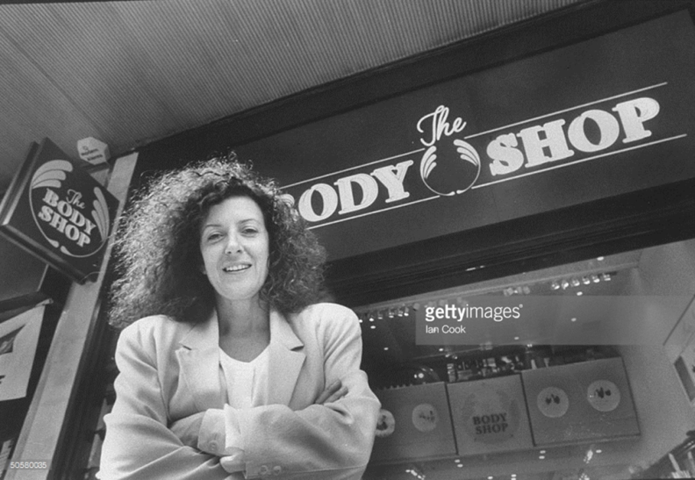

대표 로고대표 브랜드 마크
대표 로고대표 브랜드 마크홈 > 브랜드 매거진 > Douglas Holding
Douglas Holding
더글러스(Douglas)는 향수·화장품을 중심으로 하는 유럽 최대급 프리미엄 뷰티 소매 그룹이다.
산업 분야 뷰티·퍼스널케어 · 공개 등급 자료 기반 · 브랜드 평가 4.1 ★
한눈에 보는 브랜드
더글러스(Douglas)는 1821년 함부르크의 비누 공장에 기원을 두며 1910년 첫 향수점을 열었다. 1989년 더글러스 홀딩으로 사명을 바꿨고 사모펀드 소유를 거쳐 현재 약 1,970개 매장을 운영하는 유럽 1위 옴니채널 프리미엄 뷰티 소매업체다.
브랜드 관점
Douglas Holding 항목은 단순한 이름 목록이 아니라 뷰티·퍼스널케어 시장 안에서 어떤 역할을 하는지 읽기 위한 기준점입니다. 제품·서비스 범위, 유통 방식, 시각 아이덴티티, 시장 포지션을 함께 비교하면 같은 산업의 다른 브랜드와 차이가 선명해집니다.
시작과 성장
1910년 첫 향수점을 연 독일 함부르크 기원의 유럽 최대 뷰티 소매 그룹이다.
브랜드 아이덴티티
유럽을 대표하는 프리미엄 향수·뷰티 옴니채널 소매 그룹이다.
제품과 서비스
Douglas Holding의 제품과 서비스는 뷰티·퍼스널케어 범주에서 해석됩니다. 이 섹션은 상품군, 서비스 방식, 판매 채널, 사용 장면을 분리해 추적하기 위한 기본 설명이며, 추가 자료가 확보되면 대표 제품과 가격대, 시장별 차이까지 확장할 수 있습니다.
현재 상태
타임라인
정리된 연도형 이벤트가 없습니다.
BI/CI 변천사
대표 로고대표 브랜드 마크함께 읽을 브랜드
 뷰티·퍼스널케어 · 디렉토리올리브영
뷰티·퍼스널케어 · 디렉토리올리브영올리브영은 대한민국의 헬스앤뷰티 리테일 브랜드입니다. 화장품, 스킨케어, 건강식품, 퍼스널케어 상품을 큐레이션하며 K뷰티 유통의 대표 접점으로 자리 잡았습니다.
메디
메디힐
뷰티·퍼스널케어 · 디렉토리메디힐메디힐는 뷰티·퍼스널케어 브랜드로, 성분, 사용감, 패키지, 이미지 언어가 구매 판단에 직접 연결되는 영역입니다.
클리
클리오
뷰티·퍼스널케어 · 디렉토리클리오클리오는 뷰티·퍼스널케어 브랜드로, 성분, 사용감, 패키지, 이미지 언어가 구매 판단에 직접 연결되는 영역입니다.
토리
토리든
뷰티·퍼스널케어 · 디렉토리토리든토리든는 뷰티·퍼스널케어 브랜드로, 성분, 사용감, 패키지, 이미지 언어가 구매 판단에 직접 연결되는 영역입니다.
Di
Ding
기술·전자 · 편집 검수DingDing는 2025년에 기록된 Digital Products & Services 계열의 브랜드 아이덴티티 사례입니다. Wildish & Co.가 아이덴티티 작업의 디...
CO
코스맥스
뷰티·퍼스널케어 · 자료 기반코스맥스코스맥스(COSMAX)는 1992년 설립된 한국의 화장품 ODM 기업으로, 세계 1위 화장품 ODM 제조사로 꼽힌다.

뷰티·퍼스널케어 · 매거진 완성더바디샵더바디샵은 화장품을 윤리적 소비와 사회적 메시지를 담는 매개로 확장한 브랜드다. 제품의 효능만큼이나 동물실험 반대, 공정 거래, 환경 의식 같은 태도가 브랜드 선택의...
 뷰티·퍼스널케어 · 매거진 완성러쉬
뷰티·퍼스널케어 · 매거진 완성러쉬러쉬는 영국의 뷰티·퍼스널케어 브랜드로, 성분, 사용감, 패키지, 이미지 언어가 구매 판단에 직접 연결되는 영역입니다.